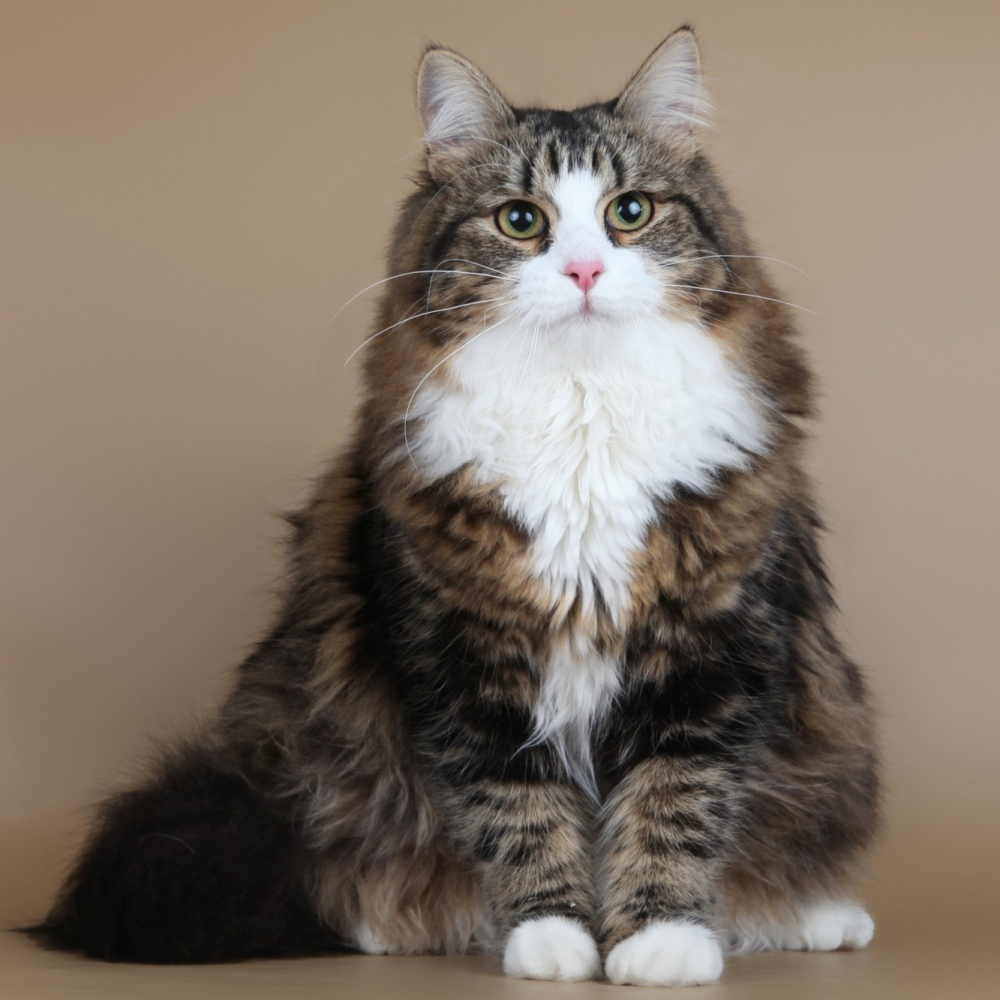

Сибирская
| Родина и время возникновения | Порода признана | Окрас |
| Восточная Россия, 1980-е гг. | TICA, FIFe. | Все окрасы, включая черепаховый, дымчатые варианты тебби (включая мраморный и тигровый), биколоры и пойнт-окрасы. |
Характер
Независимые и самостоятельные сибиряки обладают некоторыми чертами собаки, в частности могут предупредить хозяина об опасности. Животные прекрасно чувствуют настроение хозяина. Даже, если хозяин расстроен, он не устоит перед ласковым существом, расположившимся на коленях и нежно мурлыкающим в ответ на прикосновения хозяина.
Представители породы дружелюбны, прекрасно контактируют с людьми и животными. Они нежные компаньоны, не надоедающие мяуканьем и не требующие частых физических нагрузок. Хотя они игривы, склонны к приключениям. Животные очень гибки, в процессе игр, имитирующих охоту, кошки высоко прыгают и демонстрируют акробатические способности.
Отличные охотники навсегда избавят от грызунов. На протяжении десятилетий кошек использовали для отпугивания мышей и крыс на фермах и в домах.
Здоровье
Выносливые представители породы отличаются крепким здоровьем и не предрасположены к каким-либо врождённым заболеваниям. Но у некоторых сибирских кошек диагностируют гипертрофическую кардиомиопатию – одна из форм сердечных заболеваний. Для выявления заболевания назначают эхокардиограмму.
Несмотря на то, что животные физически развиты, обладают крепким здоровьем, рекомендуется содержать их в помещении, чтобы уберечь от опасностей, подстерегающих на улице.